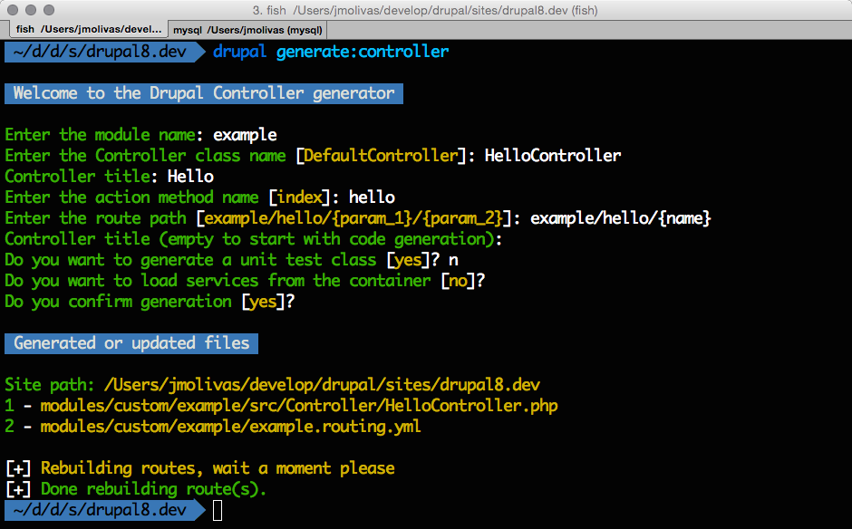

Speeding up Drupal 8 development using
Drupal Console
About me

Jesus Manuel Olivas
Drupal 8 Solutions Engineer
BlinkReaction
Reach me at:
What is the Drupal Console?
The Drupal Console is an effort to bring The Symfony Console Component to Drupal 8.
Drupal Console is not a Drupal Module
Drupal Console is a CLI tool.
Generate the code and files required by a Drupal 8 module.
Interact with your Drupal installation.
Who started this?
Jesús Manuel Olivas
@jmolivas

David Flores
@dmouse
Who else is maintainig it?

Eduardo García
@enzolutions

Omar Aguirre
@omers
But you can blame him

Why should you care about it?
Drupal learning curve

Drupal 8 learning curve

A lot of new concepts

A lot of code to write
A lot of directories & files

How does it help?
Never write a Drupal 8 module from scratch again.

Use Drupal Console instead!
Out of the box
- Generates module and info files.
- Generates PSR-4 compliant directory structure for a module.
- Registers routes on YML files and maps to controllers and forms in PHP Classes.
- Creates classes adding namespaces, uses and also extends and implements keywords when required.
- Supports adding services using Dependency Injection on class generation.
Other commands
- Lists and shows configurations.
- Lists registered services on the service container.
- Lists registered routes on the routing system.
- Rebuilds routing system cache.
- Rebuilds site caches.
- List, read, edir and export configuration data.
- Download, install & install modules.
Who will benefit from using it?
The goal of this project is provide a tool easy to use for everyone, from developers currently using Drupal 8 and those who are planning to learn.
Are there similar tools?
- Module Builder
https://www.drupal.org/project/module_builder - Drupal Module Upgrader
https://www.drupal.org/project/drupalmoduleupgrader - Drupal 8 Tools
https://github.com/anavarre/drupal-8-tools
What are the differences?
- Drupal Console follow the principles and practices introduced with Drupal 8.
- Taking advantage of the Symfony Console Component and other as Twig in order to generate PHP, YML and other files.
- No plans to support previous versions of Drupal.
Where do I find the project?
Project Landing page
Do you have a Drupal user account?
https://drupal.org/project/console
Do you have a Github account?
How about docs and help?
Documentation book at:
Please RTFM and then ping us at:
http://bit.ly/console-chatHow to download Console
Using the Installer
Install the Console locally by running the installer
in your project directory:
$ curl -LSs http://drupalconsole.com/installer | php
Access console from anywhere on your system
$ mv console.phar /usr/local/bin/drupal
You can now execute console using:
$ drupal
Using Composer
You can use composer to install console globally using the following command:
$ composer global require drupal/console:@stable
Add the binary directory to your class path
$ echo "PATH=$PATH:~/.composer/vendor/bin" > ~/.bash_profile
You can now execute console using:
$ console
Download the phar file
You can download the latest version of Console from the repository releases page at:
http://bit.ly/console-releases
Make sure you download the console.phar file from the most current release.
$ php console.phar
Updating the project
The easiest and recommended way of updating Console is using the self-update command.
Depending on the download method:
$ drupal self-update
$ console self-update
$ php console.phar self-update
Using the self-update command
Available Commands
Generators
generate
generate:authentication:provider Generate an Authentication Provider
generate:command Generate commands for the console.
generate:controller Generate & Register a controller
generate:entity:config Generate a new "EntityConfig"
generate:entity:content Generate a new "EntityContent"
generate:form:config Generate a new "ConfigFormBase"
generate:module Generate a module.
generate:permissions Generate module permissions
generate:plugin:block Generate a plugin block
generate:plugin:imageeffect Generate image effect plugin.
generate:plugin:rest:resource Generate plugin rest resource
generate:service Generate service
Using the generate:module command
Using the generate:service command
Using the generate:controller command
Using the generate:form:config command
Using the generate:plugin:block command
Using generate:entity:content command
Using generate:command command
Site Interaction commands 1/2
drush Run drush from console.
self-update Update the console to latest version.
cache
cache:rebuild Rebuild and clear all site caches.
config
config:debug Show the current configuration.
config:edit Edit the selected configuration.
config:export Export current application configuration.
config:override Override config value in active configuration.
container
container:debug Displays current services for an application.
migrate
migrate:debug Display current migration available for the application
migrate:execute Execute a migration available for application
Site Interaction commands 2/2
module
module:debug Display current modules available for application
module:download Install module or modules in the application
module:install Install module or modules in the application
module:uninstall Install module or modules in the application
rest
rest:debug Display current rest resource for the application
rest:disable Disable a rest resource for the application
rest:enable Enable a rest resource for the application
router
router:debug Displays current routes for the application
router:rebuild Rebuild routes for the application
site
site:maintenance Switch site into maintenance mode
site:mode Switch system performance configuration
test
test:debug List Test Units available for the application.
Using the --shell option
Using site:maintenance command
Using site:mode command
Using config:* commands
Using module:* commands
How to contribute
Contribute code
http://bit.ly/console-code
Contribute documentation
http://bit.ly/console-bookTranslations
- en: The Module name.
- es: Nombre del módulo.
- fr: Le Nom du Module.
- pt: O nome do módulo.
Try it ... and provide feedback.
We need all of the help we can get, please use it, love it or hate it, let us know providing feedback, creating issues, reporting bugs and asking for new features.
Spread the word and love.

@drupalconsole | #drupalconsole
Project Requirements
Getting the project
Fork your own copy of the Console repository
Get a copy of your cloned repository in your machine.
$ git clone git@github.com:[your-git-user-here]/DrupalAppConsole.git
Download dependencies via componser.
$ cd /path/to/DrupalAppConsole
$ composer update --no-dev
Contributors
Roadmap
- Keep in sync with Drupal releases Beta, RC, etc.
- Improve documentation & translations.
- Verbose code-output for learning.
- GUI provide a web-site to execute generators and provide a downloadable file containing the generated module or code.
- Export/import content capabilites similar to config.
- Generate content probably using Faker library.